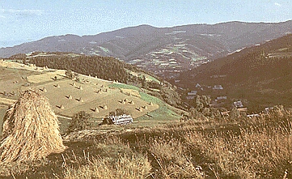

Gorce
Gorce są grupą górską leżącą na obszarze Beskidu Wysokiego. Zajmują one obszar około 530 km kwadratowych. Od północy stykają się z Beskidem Wyspowym, natomiast na wschodzie Dunajec oddziela je od Beskidu Sądeckiego. Zachodnią granicę Gorców stanowi Raba. Najwyższym szczytem Gorców jest Turbacz (1310m). Stanowi on jednocześnie centralną część całego masywu, skąd rozchodzi się kilka ramion.Jedynie Pasmo Lubania (1211m), które oddzielone jest od ramienia Kiczory (1282m) Przełęczą Knurowską (846m), jest dosyć mocno wyodrębnione od pozostałej części Gorców. Do najwyższych szczytów w Gorcach należą także: Jaworzyna (1288m), Kudłoń (1276m), Gorc (1228m), Mostownica (1251m). Gorce charakteryzują się dosyć łagodnym ukształtowaniem grzbietów, czego najlepszym przykładem jest Turbacz. Gorczańskie szczyty są z reguły zalesione, jednak dośc licznie występują bardzo malownicze polany o dużych walorach widokowych. Gorce pokryte są dosyć gęstą siecią szlaków turystycznych. Dodając do tego ich walory krajobrazowe, powoduje to, że stanowią bardzo dobre miejsce na uprawianie turystyki górskiej. Ich położenie sprawia, że oferują one turystom przepiękne widokina Podhale, oraz oddalone o kilkadziesiąt kilometrów -Tatry. Równie interesująco prezentują się stąd Beskidy (m.in. Babia Góra). Uprawianie turystyki ułatwia również usytuowanie na tym terenie kilku schronisk górskich m.in. na Maciejowej, Starych Wierchac, oraz pod Turbaczem. Dużą atrakcją jest udostępnienie gorczańskich szlaków dla górskiej turystyki rowerowej.Korzystne ukształtowanie grzbietów z licznymi polanami, oraz znajdujące się tutaj wyciągi narciarskie sprawiają, że zimą Gorce stanowią interesujący rejon dla wielbicieli narciarstwa. Przebywając w Gorcach, należy mieć na uwadze, że obszary najwartościowsze przyrodniczo wchodzą w skład Gorczańskiego Parku Narodowego. Szlak Stare Wierchy -Turbacz stanowi fragment Głównego Szlaku Beskidzkiego, który wiedzie przez Gorce na odcinku Rabka -Turbacz -Lubań -Krościenko nad Dunajcem. Najpopularniejsze dojście na Stare Wierchy stanowi właśnie znakowany na czerwono Główny Szlak Beskidzki prowadządzy z Rabki, na trasie którego leży m.in. Bacówka na Maciejowej. Z Nowego Targu prowadzi tutaj natomiast zielony szlak przez Bukowinę Obidowską. Wyruszając ze schroniska idziemy przez cały czas bardzo wygodną drogą, która udostępniona jest także dla miłośników rowerów górskich. To wznosząc się nieznacznie to obniżając osiągamy najpierw Groniki (1027m), a następnie po około 40 minutach Obidowca (1106m). Ze szlaku otwiera się w kilku miejscach ciekawy widok na leżący po prawej stronie grzbiet Średniego Wierchu i dalej w kierunku Podhala, natomiast po lewej można dostrzec ukazujące się między drzewami wzniesienia Beskidu Wyspowego. Ścieżka jest na tym odcinku wyjątkowo przyjemna, a wszelkie podejścia są bardzo łagodne. Dopiero po około 1.15godz. od schroniska szlak podrywa się nieco bardziej do góry by wyprowadzić nasna Rozdziele (1198m). Po krótkim zejściu kontynuujemy podejście, które doprowadza nas na Turbacz (1310m), który jest najwyższym szczytem w Gorcach. Przejście tego fragmentu trasy zajmuje około 1.45godz. Sam wierzchołek jest bardzo niepozorny co spowodowane jest jego całkowitym zalesieniem, przez które pozbawiony jest on jakichkolwiek widoków. Nie sposób jednak go ominąć, gdyż znajduje się na nim kilkumetrowej wysokości, betonowy słup, oraz krzyż. Idąc dalej dochodzimy w przeciągu kilku minut do położonego nieco niżej schroniska, sprzed którego rozpościera się wreszcie ciekawy widok w kierunku Podhala i Tatr.
Najwyższy szczyt: TurbaczWysokość: 1310 m.n.p.m.